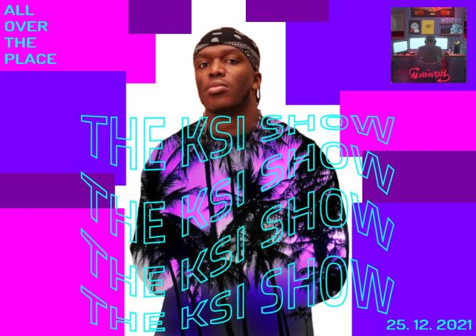
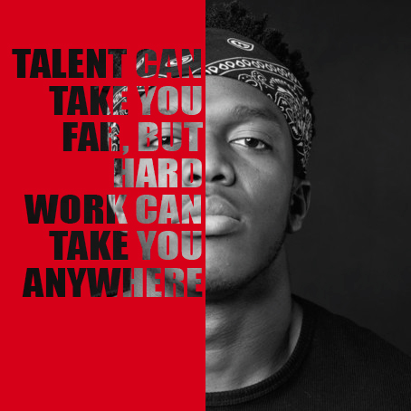
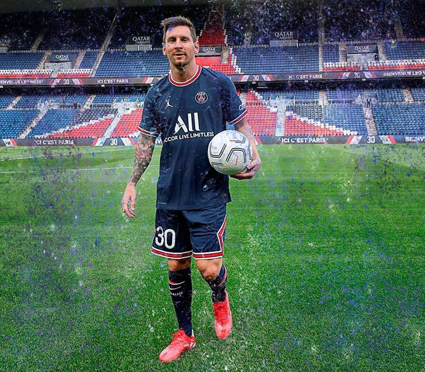
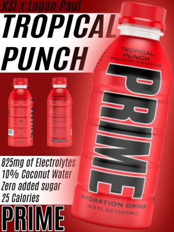
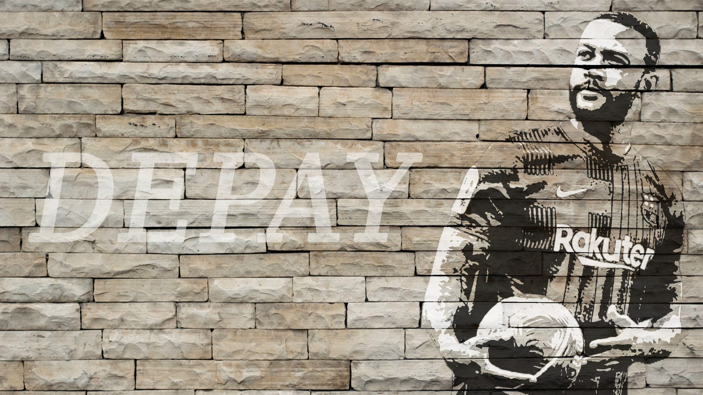
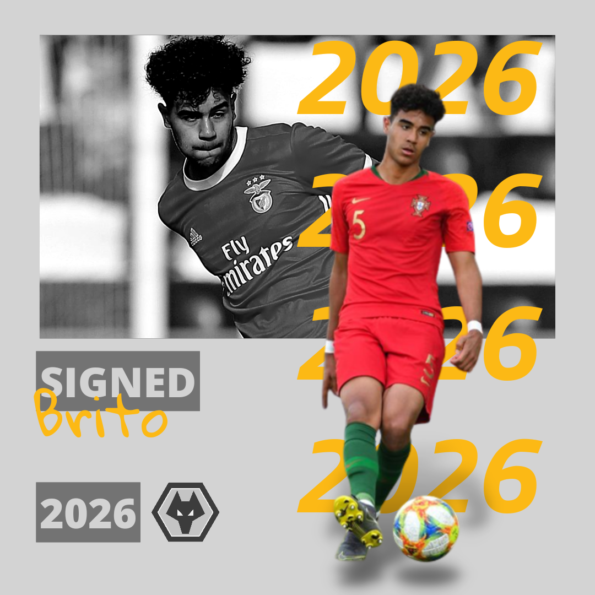
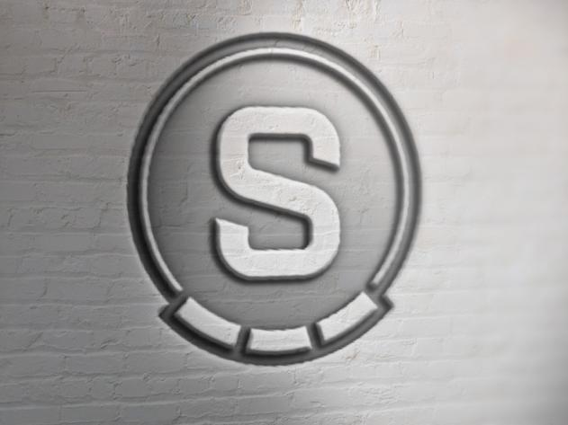

Jsem šestnáctiletý kluk, který studuje na střední škole Creative Hill College. Baví mě tvořit webové stránky a design. Zajímám se dost o sporty, především o fotbal. Studium na Creativu mě dost naplňuje a vidím v tom velkou budoucnost. Člověk, který tuto školu zvládne, tak má mnoho možností. Jsem na této škole spokojený a jsem rád, že se mohu učit novým věcem, které mi může tato škola přinést.

Od roku 2020 jsem adminem na stánce Ofsajd.cz, která má své sledující na Instagramu. Snažíme se každý den, aby lidé měli přehled o novinkách z fotbalového prostředí a také měli info o svém klubu. Nově také na stránce zastupuji roli grafika.
POKRAČOVAT